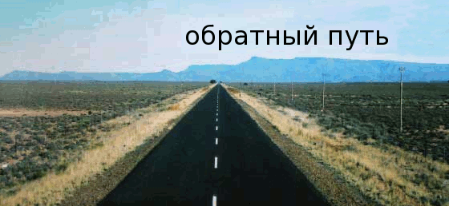

Глава Пятая
Самый тягостный вид ожидания, когда неизвестен его срок.
В бессрочном ожидании время утрачивает свой смысл и, практически, останавливается, несмотря на продвижение стрелок по утратившим свое значение цифрам: ведь неизвестно какую именно нужно дождаться.
Так и маялись мы, пассажиры недвижимого автобуса, на обочине, в зоне застывшего времени.
Роль «бога из машины» исполнил двухметроворостый здоровила, сошедщий с попутки и встреченый возбужденными возгласами всех трех наших водителей.
Заливаясь младенчески радостным смехом во весь свой свободный от передних зубов рот, новоприбывший сообщил, что у его автобуса лопнули "ерку покрышка" ерку покрышка —
на карабахском диалекте армянского означает: "два колеса".
за 20 километров по ту сторону от МинВод.
Решение было принято мгновенно: все пассажиры и Самвел остаются ждать дальше, а взревевший мотором автобус круто разворачивается и уходит за недоехавшей партией, увозя незаглушимое хохотанье беззубого гиганта.
И снова тянется ожидание: но уже облегченное вычислениями (... пока доедут туда, выгрузят вещи с того: погрузят на этот...) и скрашенное выглядыванием в ту сторону шоссе, откуда должен приехать наш автобус.
Он подходит в начинающих сгущаться сумерках, с новыми людьми и заметно прибавившимся багажом на полках и перед задней дверью.
Освобожденные от ожидания пассажиры отыскивают свои места, а я, с моим нулевым билетом, занимаю какое осталось.
Самвел и Дживан заносят сумки из багажника синего «жигули» под присмотром коренастого крепыша лет за сорок в спортивно-тренировочном костюме и девицы годам к двадцати в легком черно-белом платьи с разрезами до пола и с неприступно суровым лицом, как у той не то царицы, не то богини на армянских денежных знаках достоинством в 5 000 драм.
Они прощаются с провожающими из синего «жигули», и крепыш подходит ко мне с разъяснением, что места 14 и 15 (на одном из которых я уселся) – это их.
Безропотно перехожу на 21-е.
Автобус бодро мчит вперед.
Местность за окнами становится все более холмистой. Хорошо!
Хорошо стремительно пролетать мимо и между круглящихся бугров, рощиц, сел, белеющих в сумерках кубиками домов с желтыми квадратиками засветившихся окон.
Стоп! Зачем?
Светящаяся ламповым светом будка ГАИ у дороги. Атаманистый милиционер призывно манит водителя.
Дживан выходит на переговоры. Через минуту возвращается за автоаптечкой. Еще через две-три приносит ее обратно.
- Ну?- с живым интересом вопрошают остальные водители.
- Говорит: клея нет.
- Ва!
У всех последущих постов ГАИ разных стран региона процедура повторялась намного короче: автобус останавливался, Самвел или Дживан сбегали в открывающуюся дверь с маршрутным листком в руках и стопкой банкнот в нагрудном кармане.
Они торопливо возвращались, а старший водитель раскрывал ученическую тетрадь и в разных местах одной и той же страницы выводил многонольные цифры выданной мзды.
Однажды, на мои расспросы, он поделился:
- За одну поездку бывает так вот раздаем до 5 миллионов российскими.
- А в Армении ГАИ так же грабит?
Он отмолчался.
За окнами окончательно стемнело. В пещерную мглу автобуса изливалось лишь мерцание от приборной доски водителя да пары тусклых лампочек-плошек над штольней прохода между сиденьями, а еще—время от времени—хлестал по стеклам скачущий свет фар встречных автомобилей.
На границе не то Кабарды, не то Балкарии, автобус заправился из баков гостеприимного поста российских войск.
Молодой лейтенант рад был видеть старых знакомых, чьи имена он и не знал, да забыл.
Пока водитель отошел с лейтенантом обсудить текущие вопросы экономического сотрудничества, я разглядел перед шлагбаумом пару рядовых и «дембеля» в солдатском бушлате без знаков различия. Он держал за шиворот тщедушного мужика в гражданской одежде.
Когда мы отъезжали, мужик вдруг рванулся и вскочил на ступеньку автобуса, но был сдернут оттуда детиной в бушлате, ласково приговаривающим:
- Ну, куда? Куда, Федот Иваныч?
(Вот и все. Нет у меня никаких пояснений, ни комментариев к эпизоду с бессловесным мужиком, обеспамятевшим от животного ужаса, что застыл в его выпученных глазах, и с ражим молодцем, потешающимся игрой в кошки-мышки.)
Я уснул, сидя в кресле, и проснулся на границе между Северной и Южной Осетией. Здесь проверяли всерьез. Собрали паспорта и понесли к себе на компьютер.
За окном слышалось бушевание ветра.
Я спустился в открытую дверь. И впрямь обвевает ночной горный бриз, но с чего этот неумолчный штормовой шум?
Потом угадал: внизу, за домиками поста, шумно скатывается невидимая в ночи река.
По другую сторону шоссе – крутая стена скал и бетонные колонны непонятной в темноте эстакады.
Пограничник с автоматом предупреждает не отходить от автобуса.
Приближаюсь к нему с вопросом: где тут туалет?
Он кивает на классического вида будку за оградой, отделяющей пост от шоссе:
- Вон – у таможенников.
Благодарю и направляюсь к ней, но сваренная из труб калитка в ограде не подается.
Когда я, вскарабкавшись наверх, балансирую на верхних трубах, от домика таможни доносятся вопли-окрики и, вдогонку, хлопок пистолетного выстрела. Спрыгиваю обратно.
(Сосунок недоношеный с твоим пугачем-пукалкой! Не слыхал ты
как ГРАДЫ ГРАД —
ракетно-артилерийская установка массового уничтожения, вид вооружения Советской Армии широко применявшийся в карабахской войне 1991-1994 г.г.
пуляют.)
Возвращаюсь к пограничнику с вопросом:
- А другого туалета тут нет?
Он лишь молча качает головой, не сводя с меня внимательных глаз.
Отправляюсь в классическое дорожное место—за корму автобуса—излить свое разочарование неудовлетворительным устройством мира, в котором, скрывшись от попутчиков, оказываешься на виду у «жигулей», что ожидает когда пропустят в Северную Осетию.
Ночь проходила и сменялась утром. Пассажиры засыпали и просыпались. Водители сменяли друг друга и только автобус все бежал и бежал скакуном-мустангом по дорогам Грузии, пока не взовьется—с интервалом в 30 - 40 минут—лассо милицейского свистка, сбивая автобус с темпа и вызывая хор рефлективного "Ва!" пассажиров.
Грузия.
Мекка российских столпов прекрасной словесности.
Побудут, вдохновятся, воспоют.
Пушкин, Толстой, Булгаков – много ли б они натворили не посетив Кавказ?
От Лермонтова б вообще ничего не осталось, кроме поэтического вранья про "свинец в груди поэта"; тогда как Александру Сергеевичу, на спровоцированной им дуэли, пуля угодила ниже — в пах.
А мне Грузия привиделась сухопарой женщиной в черном, с непрощаюшей печалью в глазах, а по плечам—вместо шали—кусок подраной мешковины, что была привязана, как навес, на одном из промелькнувших придорожных базаров.
"Раздираемая гражданской войной Грузия..." Хорошо, что это уже позади.
Промелькнул и Тбилиси с его нескончаемой Курой в асфальтных берегах и пыльным памятником на пыльных скалах.
Поля на округлых склонах. Ряды деревьев по сторонам шоссе.
Обед у придорожного павильона—зеленого строительного вагончика—под деревом зеленым, у струящегося из железной трубы родника с зеленоватой склизью на бетонных стенках.
Автобус взбирался все выше, где вовсе перестали попадаться мустангеры из ГАИ, а по ущелью сбегала навстречу торопливая шумная речка, в деревнях смуглые пацаны с англо-надписями на Т-майках бросались перенять автобус и что-то кричали, размахивая пучками деликатесных лесных трав для продажи пассажирам.
Автобус профыркивал мимо.
Чувствовалось, что уже недалеко.
О, армянская земля, ты уже за горой!
Водитель на радостях взрезал купленую утром при дороге дыню. Предложил и мне ломоть.
Я хоть и хотел, но отказался: их вон трое, а дыня одна.
Дживан и Самвел затеяли баловаться и обливать друг друга водой на площадке перед выходом, под хохот и советы пассажиров-зрителей.
Полная эйфория.
Не рано ли?
Автобус въехал в грузинское пограничное село Гугути и стих перед одноэтажным выгорело-зеленым зданием таможни.